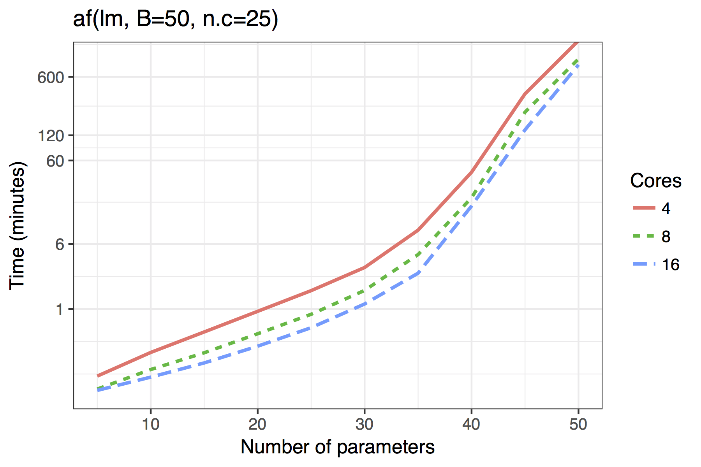
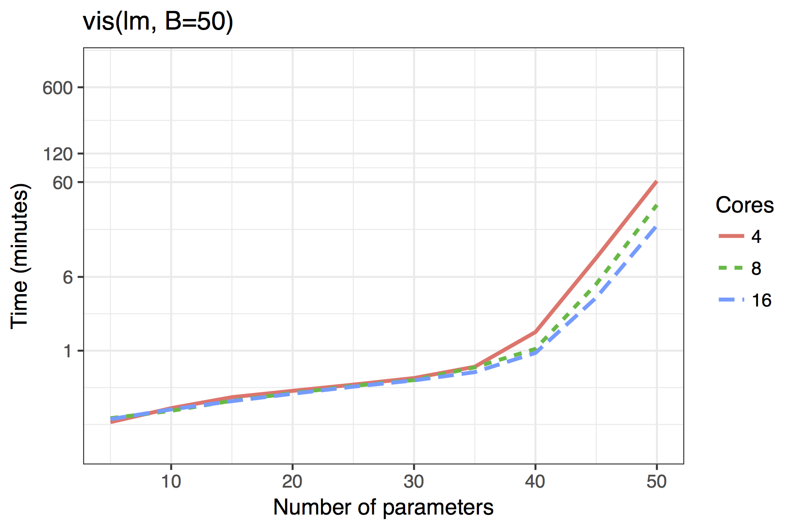
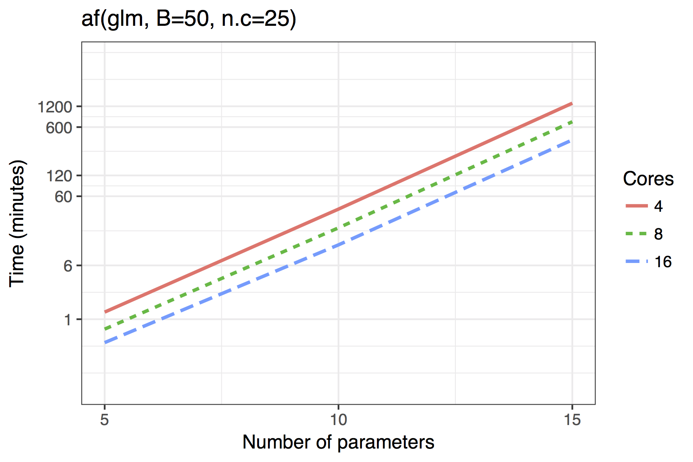
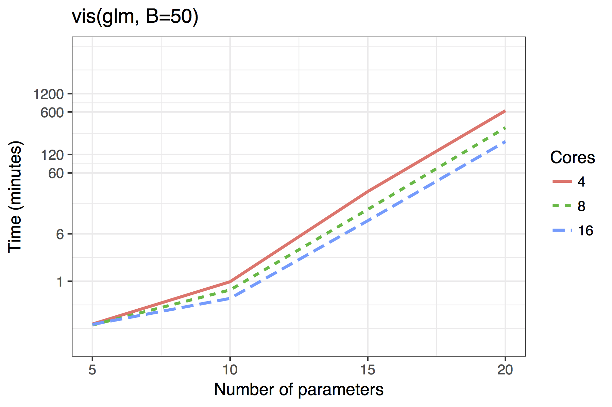

Any bootstrap model selection procedure is time consuming. However, for linear models, we have leveraged the efficiency of the branch-and-bound algorithm provided by leaps (Lumley & Miller, 2009; Miller, 2002). The bestglm package is used for GLMs; but in the absence of a comparably efficient algorithm the computational burden is much greater (McLeod & Xu, 2014).
Furthermore, we have taken advantage of the embarrassingly parallel
nature of bootstrapping, utilising the doParallel
and foreach
packages to provide cross platform multicore support, available through
the cores argument. By default it will detect the number of
cores available on your computer and leave one free.
Figure \(\ref{fig:time}\) shows the timing results of simulations run for standard use scenarios with 4, 8 or 16 cores used in parallel. Each observation plotted is the average of four runs of a given model size. The simulated models had a sample size of \(n=100\) with \(5,10,\ldots,50\) candidate variables, of which 30% were active in the true model.
The results show both the vis() and af()
functions are quite feasible on standard desktop hardware with 4 cores
even for moderate dimensions of up to 40 candidate variables. The
adaptive fence takes longer than the vis() function, though
this is to be expected as the effective number of bootstrap replications
is B\(\times\)n.c, where
n.c is the number divisions in the grid of the parameter
\(c\).
The results for GLMs are far less impressive, even when the maximum
dimension of a candidate solution is set to nvmax = 10. In
its current implementation, the adaptive fence is only really feasible
for models of around 10 predictors and the vis() function
for 15. Future improvements could see approximations of the type
outlined by to bring the power of the linear model branch-and-bound
algorithm to GLMs. An example of how this works in practice is given in
Section \(\ref{sec:bw}\).
An alternative approach for high dimensional models would be to
consider subset selection with convex relaxations as in or combine
bootstrap model selection with regularisation. In particular, we have
implemented variable inclusion plots and model stability plots for
glmnet (Shen et al., 2012). In general, this is
very fast for models of moderate dimension, but it does not consider the
full model space. Restrictions within the glmnet
package, mean it is only applicable to linear models, binomial logistic
regression, and Poisson regression with the log link function. The
glmnet package also allows for
"multinomial", "cox", and
"mgaussian" families, though we have not yet incorporated
these into the mplot package.
   
Average time required to run the af() and
vis() functions when \(n=100\). A binomial regression was used for
the GLM example.